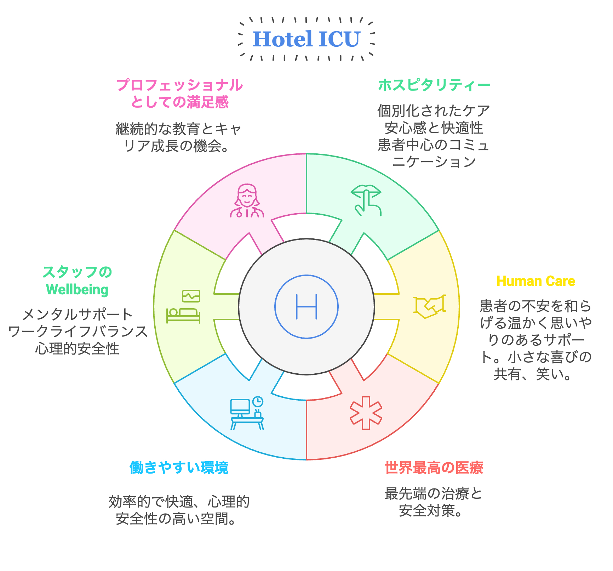
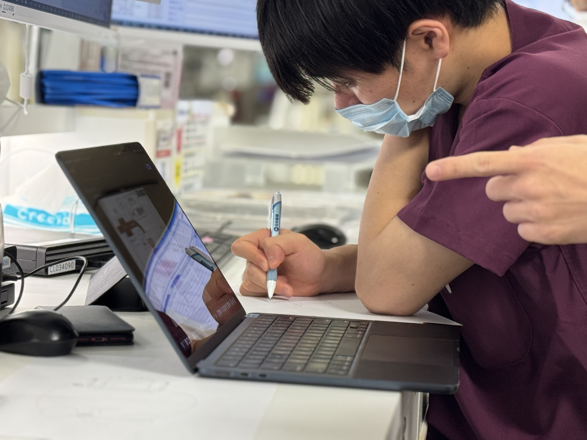
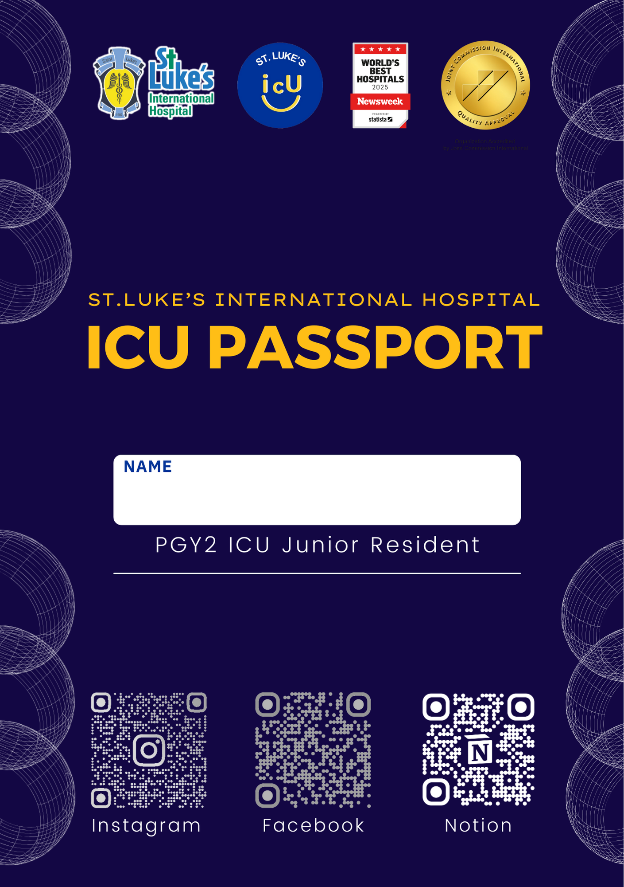
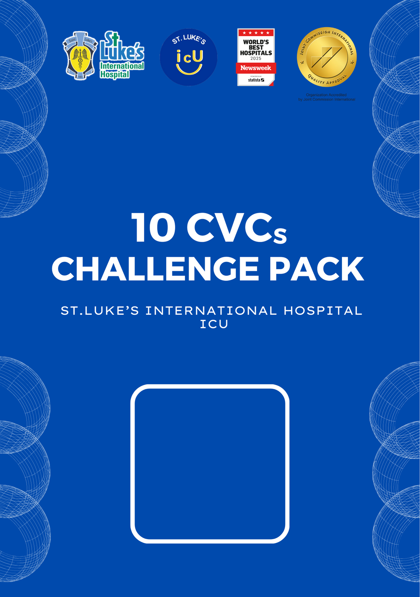
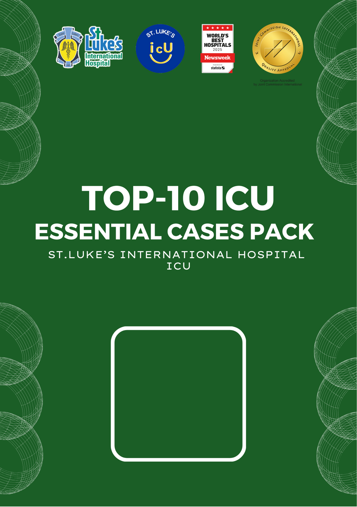
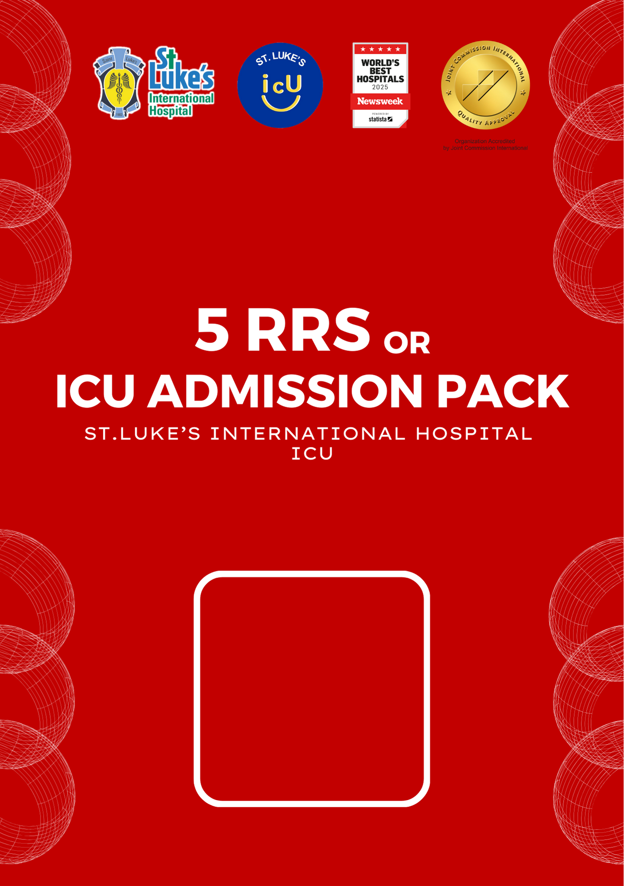
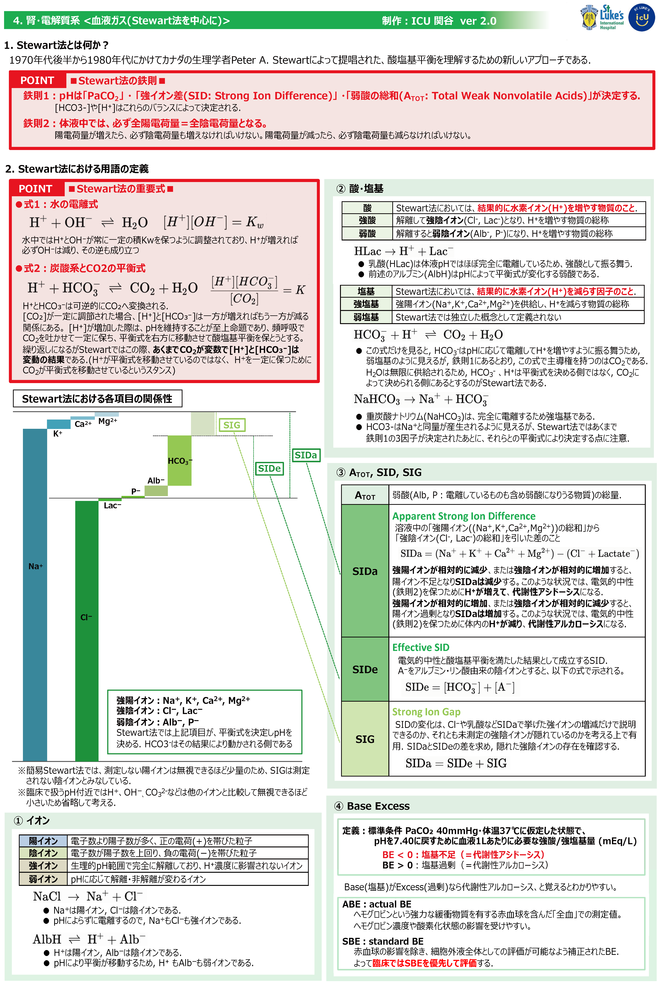
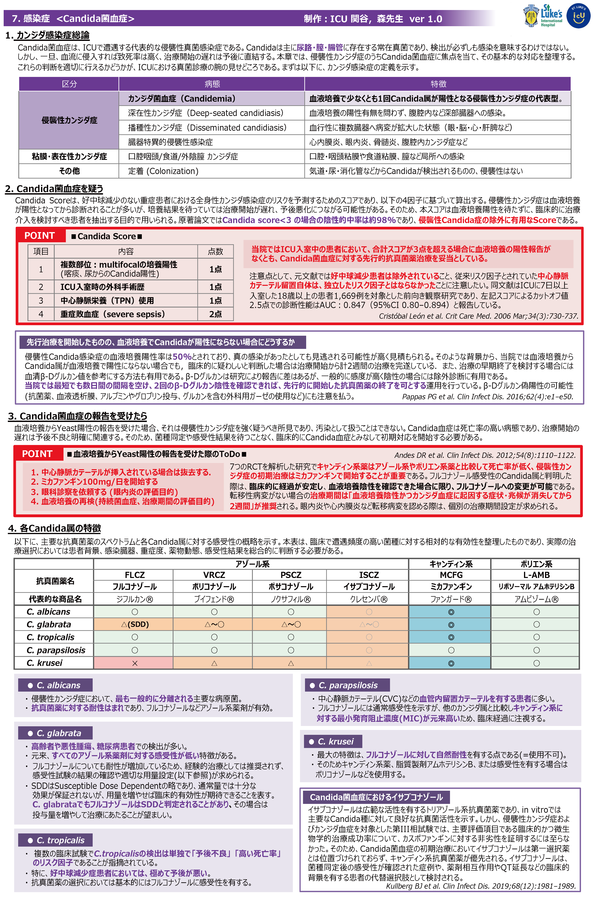

患者の個人情報取り扱いには十分ご注意ください。このページはICUローテーター向けの情報提供ページです。最新の情報は担当指導医・スタッフにご確認ください。レイアウトはPCデスクトップ用に最適化しています。
はじめに
聖路加ICUが目指すもの

「Hotel ICU」はレイアウト変更に代表されるような、ICU環境を整えるという意味だけではなく、患者様に安らぎと最高のケアを提供するという私たちの強い意志を表しています。患者様一人ひとりに合った最高のケアを提供していきましょう！
— ICU部長 岡本 洋史 先生 2024年 新年挨拶より
ローテーション修了時の到達目標

【必読】ローテ開始前のTo Do
確認事項・自己紹介・感染予防クイズ・必須動画・ICUルールの5ステップ
スケジュール
平日の1日の流れ
土日祝日の1日の流れ
週間スケジュール
ICUの方針
ICUのルール
内科・外科病棟と異なるICU独自のルールをまとめています。ローテーション開始前に必ず確認してください。
スタッフ紹介・チーム編成
ICUスタッフの紹介・チーム構成・役割分担・連携体制についてまとめています。
ICUのセット
ICUで使用するオーダーセットの一覧・アクセス方法・各セットの展開手順をまとめています。
学習・評価
ICU PASSPORT（レクチャーシート）
ICUローテーション中は学習のモチベーションを高める4種類のミッションを用意。詳細はこちらから




聖路加ICU動画講座集
学びたい内容を、学びたい時に、学びたいだけ。特設サイトはこちらから
ID×ICU Conference 動画集
感染症科 森先生による週1レクチャーの録画アーカイブです。
【ICU】注目論文・最新ガイドラインまとめ
ICU関連の最新ガイドライン・注目論文を臓器系統ごとに整理。原著PDFの内容のみに基づいた要約ページ集です。
【内科外来】注目論文・最新ガイドラインまとめ
内科外来で遭遇する疾患の最新ガイドライン・注目論文を臓器系統ごとに整理した要約ページ集です。
【研修医向け】疾患/症候マニュアル
収録済みの論文・ガイドラインの知見を疾患ごとに横断的に統合した総説ページ集です。
レジデントのICU資料集





FAQ
3段階で進めましょう：
- まずICU PASSPORTのレクチャーを1〜2週で全修了
- ICU動画講座集（50本以上）を興味に応じて視聴
- 注目論文・ガイドラインまとめで深掘り
- 【研修医向け】マニュアルで疾患ごとの総説を確認
- 秘書 川田さん・部長 岡本先生に事前に連絡
- 病棟長・レジデント間での半休日の交換は自由（変更時も連絡すること）
- ① ICU入室時セットを展開（各種スコア入力を忘れずに！）
- ② 輸血・ラインなどの同意書4点セットを確認
詳細は ICU入室時のTo Do List を参照してください。
- まず患者の安全を最優先に確保
- 当直上級医に速やかに連絡（伝書鳩で怒る先生はいません）
- 必要に応じてRRS（院内急変対応システム）を起動
- 3分後には急変しているのはよくある話。ためらわず報告を
ICUのルール も併せて確認してください。
1患者あたり5〜7分を目標に、冗長な内容は削ぎましょう：
- By-system形式で各臓器の状態を簡潔に
- 朝の申し送りで得た夜間の変化を盛り込む
- カンファで決まった内容は患者リスト「本日の方針」に記載後、カルテに転写
詳細は ICUカンファレンス ページを参照してください。